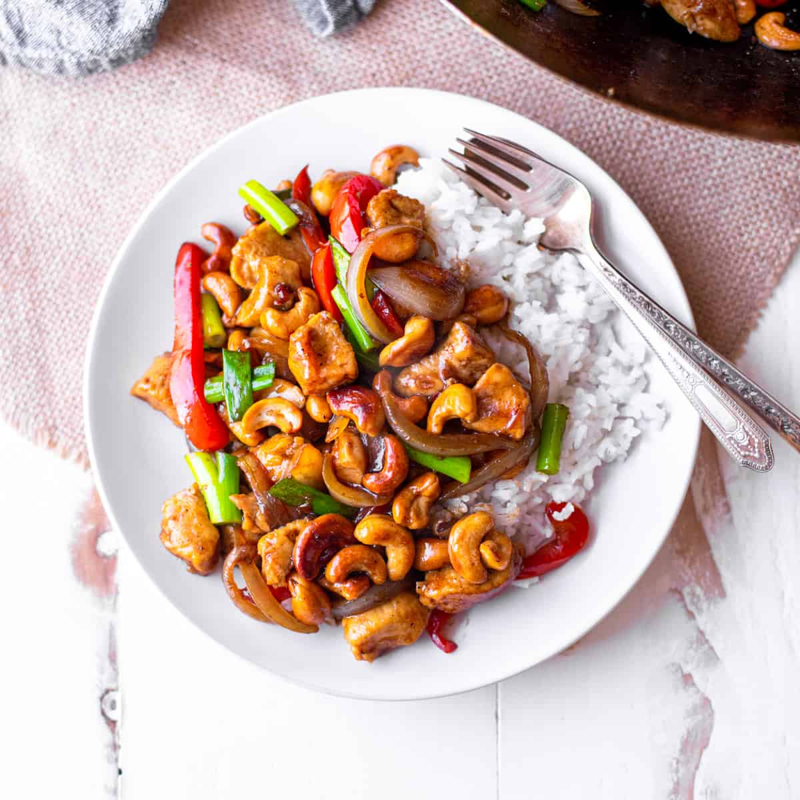

Odin Recipes
Thai Cashew Chicken
This is a quick and simple recipe for my favorite thai cashew chicken.

Description
This cashew chicken makes for a quick weekday meal. It is super easy to put together and tastes as good as your local takeout place.
Ingredients
Chicken
- 1lb boneless skinless chicken tenders or chicken breasts
- 1/4 cup all purpose flour
- 2tsp paprika
- 1tsp garlic powder
- 1tsp onion powder
- 1/2tsp cumin
- 2TB oilive oil
- 1/4 cup lite soy sauce
Cashew Sauce
- 1/2 cup unsalted roasted cashews
- 1/2 cup lite soy sauce<
- 2TB hoison
- 1TB oyster sauce
- 1/2TB gochujang
- 1TB ginger paste
- 1TB brown sugar
- Drizzle of honey, to taste
- 2tsp all purpose flour
Vegetables
- 2 bell peppers, any kind. Cut into bite size squares
- 1 jumbo white onion cut into bit size pieces
- 2TB olive oil
How To make
- De-tendon your chicken, pat with paper towels to dry, and cut into bite-size chunks
- Combine dry ingredients in bowl or shallow dish
- toss chicken in dry ingredients until well-coated
- Heat a 12in pan over medium-high heat, add olive oil
- Once olive oil is shimmering, add chicken pieces
- Cook chicken on med-high for 4-6 minutes, flipping half-way thru. After flipping, reduce heat to medium
- Once cooked thru, about 4-6 minutes, remove from heat and de-glaze pan with 1/4 cup soy sauce
- In the meantime, combine all sauce ingredients in a bowl and whisk together
- Heat large pan over med-high heat. Add olive oil
- Once oil is shimmering, add vegetables and saute until lightly browned. About 5 minutes
- Add cashews and saute until starting to brown, about 2 minutes
- Once vegetables are cooked, add sauce ingredients
- Reduce heat to med-low and let sauce simmer until thickened, about 4 minutes.
- Add chicken pieces and stir to combine
- Serve over jasmine or basmati rice, make sure to scoop extra sauce